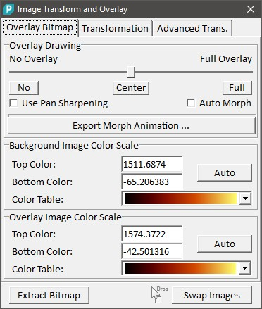
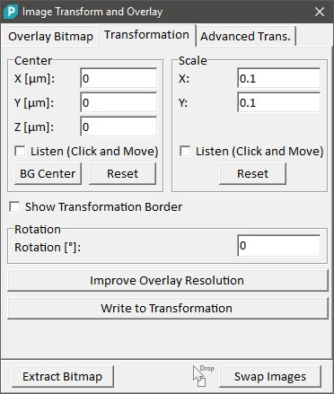
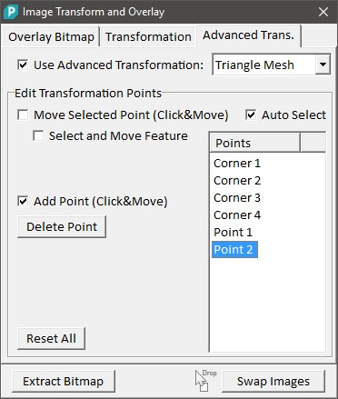
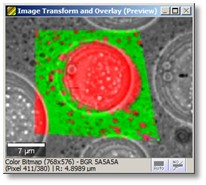

|
描述
图像变换与叠加对话框具有以下功能：
另请参阅
输入与结果
输入：
结果：
用户界面

叠加绘制（滑块）：
使用此滑块可以更改叠加图像的不透明度。
使用全色锐化（复选框）：
如果勾选，背景图像定义亮度（因此仅为黑白），叠加图像定义颜色：叠加滑块从"无叠加"到"中心"的位置定义叠加颜色的不透明度；从"中心"到"完全叠加"的叠加滑块位置定义叠加强度的不透明度。如果未勾选，背景图像保留其颜色，叠加图像仅被覆盖。
自动变换（复选框）：
如果勾选，叠加图像不透明度会自动平滑变化（这有助于例如在比较叠加图像中的特征与背景图像中的特征时调整变换）。
导出变换动画（按钮）：
打开动画编辑器以导出动画。仅使用叠加参数进行动画。
背景/叠加图像颜色比例（分组框）：
可以更改彩色位图的对比度/亮度或浮点图像的颜色比例——取决于此对话框使用的数据对象类型。
交换图像（按钮，拖放区）：
按下此按钮会使对话框重新初始化，使用当前叠加图像作为背景图像，反之亦然。这也是一个拖放区。您可以将另一个叠加图像放置到此按钮上，以保留所有设置和变换。这仅在放置的图像使用相同的空间变换时有效。
提取位图（按钮）：
按下此按钮将当前预览作为新的彩色位图数据对象提取并添加到当前项目。

中心（分组框）：
使用 X/Y/Z 编辑框可以查看和更改叠加图像的当前绝对位置。注意：更改位置的更好方法是下述的监听机制。
监听（复选框）：
如果勾选，可以在预览图像查看器中点击并移动叠加图像以更改叠加图像的绝对位置或比例。
背景中心（按钮）：
将叠加图像的中心位置设置为背景图像的中心（在叠加图像的变换完全不同时有意义，例如导入图像时）。
重置（按钮）：
使用原始变换重置叠加图像的中心或比例位置。
旋转（浮点编辑框）：
更改叠加图像的旋转（此参数仅在垂直于图像平面的轴上旋转图像）。
提高叠加分辨率（按钮）：
通过提高分辨率创建新的背景图像或位图。当叠加图像的分辨率高于背景图像（在叠加区域）时很有用。提高分辨率后，背景图像有足够的像素，使得叠加图像可以以其完整分辨率显示。注意您只会在叠加区域看到差异。
写入变换（按钮）：
这将覆盖叠加图像的空间变换数据（不仅仅是预览变换！）。这可能影响使用相同空间变换的其他数据对象（图像和图像图谱对象）。通常这意味着由同一测量创建的对象或同一测量分析的结果。在确认或取消永久变换更改之前，您将获得所有受影响数据对象的列表。

使用高级变换（复选框）：
打开或关闭高级变换。
高级变换选择器（组合框）：
可以选择以下高级变换：仿射（3 点仿射映射，参见仿射变换数学）、双线性（4 点双线性映射，参见双线性变换数学）、三角网格（任意数量的点创建三角网格；每个三角形使用仿射映射，参见三角剖分数学）
移动选定点（复选框）：
打开监听机制以更改单个点的位置。如果自动选择复选框被勾选，鼠标光标附近的点将监听光标位置；否则，点列表中当前选定的点将监听。
选择并移动特征（复选框）：
如果勾选，按下鼠标按钮时鼠标光标位置将用作变形的源位置。如果您希望点击叠加图像中的特征并将其"移动"到背景图像上的对应特征上，请使用此功能。
添加点（复选框）：
在三角网格模式下添加新点。按下鼠标时使用点击位置的源位置添加点。如果之后移动鼠标，点的目标位置会更改。
删除点（按钮）：
删除点列表中当前选定的点。角点不能被删除。注意：如果自动选择复选框被勾选，您可能在删除前意外选择了另一个点。
全部重置（按钮）：
删除所有自定义点并将角位置重置为原始图像角位置。

预览图像窗体显示背景和叠加图像。在高级变换模式下，还显示当前选定的点，这使得使用自定义失真效果变得容易。